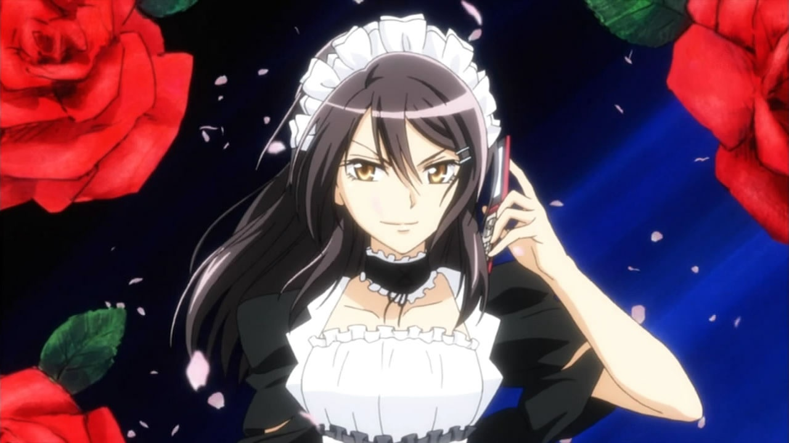
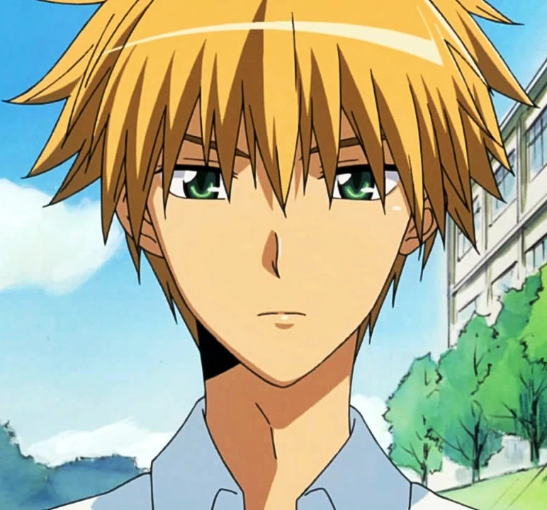

Місакі Аюдзава
Президентка студентської ради, сувора і справедлива. Працює у кафе покоївок, щоб допомогти своїй сім'ї. Приховує свою роботу від інших учнів.

×

Усуї Такаюмі
Популярний хлопець у школі. Випадково дізнається секрет Місакі, але не розкриває його. З часом проявляє щирі почуття до неї.

×